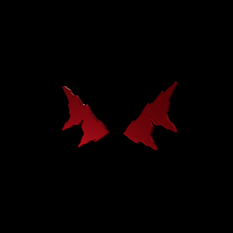

DAEGHO began with a word that was never meant to be worn with pride.
“Dago” was a derogatory slur used against Mediterranean immigrants, including Portuguese and Italians, particularly in Australia and the United States. It was a way of making people feel foreign, inferior, and unwelcome.
With Portuguese and Italian roots of my own, I took inspiration from a word once used against people like my ancestors and turned it into something entirely my own.
The name DAEGHO became a symbol of resilience, rebellion, and pride. A refusal to let anyone else define who I am.
My surname, Rebelo, has always felt connected to that same spirit. To me, it represents defiance, resistance, and the refusal to be shaped by the expectations of others.
DAEGHO is the outcast with a purpose.
The rebel with a cause.
A legacy turned into power.
02 / EYES DON’T LIE+
The eyes are the part of us that speak before words do.
They reveal what the mouth tries to hide: fear, desire, pain, hunger, and intention.
No matter how carefully someone controls their image, their voice, or the persona they present, the eyes always reveal something real.
This symbol represents that truth.
Sharp, imperfect, and almost inhuman, the eyes are not meant to look soft or friendly.
They are a warning to look deeper, see through illusion, trust your instincts, and recognise what lies beneath the surface.
But EYES DON’T LIE also reflects something darker: a dystopian world where nothing feels private anymore. A world of cameras, screens, algorithms, and invisible eyes, where people are watched, judged, and influenced without even realising it.
A world where truth becomes harder to find, but impossible to fully hide.
The truth behind the mask.
The watcher and the watched.
The soul staring back.
In a world where everything is monitored, filtered, and controlled, the eyes become the final rebellion — the one thing that cannot be programmed to lie.
EDEN CITY is a dystopian society controlled by a corporation that monopolises knowledge, entertainment and human intelligence. Independent artists are forbidden, and exceptional talent is exploited for corporate propaganda.
DAEGHO, a naturally gifted artist, is abducted and experimented on by HELIX. His brain functionality is successfully enhanced to 100%, but his obedience chip malfunctions, nearly killing him. Presumed dead, he escapes, accidentally descending into the hidden civilisation of NEGAT!VE 300.
Now possessing extraordinary awareness of society’s manipulation, DAEGHO establishes EYES DON’T LIE, an underground movement dedicated to exposing deception, spreading knowledge and liberating the population from EDEN’s control.
EDEN CITY is a futuristic megacity ruled by EDEN CORPORATION, which controls government, education, information and entertainment. Citizens use IRIS, a centralised currency, while living under constant surveillance and strict social divisions.
Beneath its utopian appearance lies a society built on propaganda, manipulation and control. The city embodies the struggle between truth and deception, freedom and oppression, and knowledge and ignorance.
Home to EDEN CITY's elite, including corporate executives and ruling families. With luxurious residences, exclusive facilities and the highest levels of authority, THE ORCHARD represents EDEN's manufactured paradise.
+10 TO −10 — GREEN ZONE
The civilian heart of EDEN CITY, where ordinary citizens live, work and access education, entertainment and healthcare through HELIX Medical Centers. Daily life is closely monitored by VERA TECHNOLOGIES.
−11 TO −199 — RED ZONE
The centre of government and military operations, housing ARMA headquarters, weapons development and security infrastructure. Access is heavily restricted and surveillance is extensive.
−200 TO −299 — BLACK ZONE
A classified sector containing HELIX laboratories, dangerous experiments, biotechnology research and containment facilities. Protected by ARMA under the Black Zone Protocol, access is extremely restricted.

−300 — NEGAT!VE 300
An off-grid civilisation hidden from EDEN, inhabited by outcasts, escapees and discarded experimental subjects. Known only as an urban legend, it thrives on underground music, art and counterculture, beyond corporate surveillance. It is the birthplace of EYES DON'T LIE.
EDEN CITY operates under a strict social hierarchy where higher levels grant greater wealth, authority and privileges. Social status and occupations are largely inherited, with movement between classes extremely rare.
Approximately 95% of positions are filled by insiders, while the remaining 5% require sponsorship, extensive vetting and lifelong secrecy. Citizens who defy the system risk being sent to the BLACK ZONE for experimentation.
In EDEN CITY, ordinary citizens naturally operate at just 1% brain functionality, while the elite possess 100%, granting extraordinary intelligence, awareness and perception. This divide ensures knowledge and power remain concentrated at the top.
Neural implants unlock full brain functionality, while a secondary control chip monitors enhanced individuals and enforces obedience to EDEN CORPORATION. Even those possessing extraordinary intelligence remain under corporate control.
EDEN ENTERTAINMENT monopolises music, film, gaming and media throughout EDEN CITY, controlling what citizens see, hear and consume. All entertainment is carefully regulated to reinforce corporate ideology and suppress independent thought.
Independent artists are forbidden, as EDEN CORPORATION recognises the power of creativity to influence society. Artists are controlled and exploited to ensure their work serves the corporation rather than the people.
Despite independent artistry being forbidden, DAEGHO secretly created music from a young age. At 18, his extraordinary talent was detected through VERA TECHNOLOGIES' surveillance systems and brought to the attention of EDEN ENTERTAINMENT. Recognising his potential to influence society, the corporation ordered his abduction, intending to transform him into an elite artist under its complete control.
Taken to the BLACK ZONE, DAEGHO underwent neural enhancement by HELIX INDUSTRIES, unlocking 100% brain functionality. However, his secondary control chip malfunctioned, triggering a near-fatal seizure that left researchers believing he was dead.
Regaining consciousness, DAEGHO escaped the laboratory unnoticed. Disoriented, he unknowingly ventured deeper into the BLACK ZONE rather than towards the surface, eventually discovering the hidden civilisation of NEGAT!VE 300. There, he found refuge among society's outcasts and established the EYES DON'T LIE movement.
Founded by DAEGHO in NEGAT!VE 300, EYES DON'T LIE is a movement built on the belief that eyes reveal what words and appearances conceal: fear, desire, pain, hunger and true intentions. Its sharp, almost inhuman symbol represents the truth behind the mask, encouraging people to look beyond illusion and recognise what is real.
In a society ruled by surveillance, propaganda and manipulation, the eyes represent both the watcher and the watched. Where everything is monitored, filtered and controlled, they become the final rebellion — the one thing that cannot be programmed to lie.
EDEN CORPORATION maintains its power through surveillance, propaganda and the suppression of independent thought. Meanwhile, deep beneath the city, EYES DON'T LIE challenges everything the corporation stands for, spreading a message of truth, individuality and freedom.
DAEGHO's escape threatens EDEN's system of control, particularly because his enhanced intelligence remains beyond its reach. Although the corporation suspects his survival, it has yet to uncover the truth behind NEGAT!VE 300 or the growing movement hidden within it.
EDEN CITY is an ever-expanding universe, with new characters, stories and locations gradually revealing more of the world beneath EDEN CORPORATION's control. Each new perspective will explore different aspects of society, from the privileged elite to those struggling to survive underground.
As the world develops, new alliances, rivalries and untold stories will shape the future of NEGAT!VE 300 and the EYES DON'T LIE movement.
Dubstep was entering its golden years, and 13-year-old me was obsessed.
I remember downloading an app called DJAY. What started as a bit of fun quickly turned into hours spent speeding up songs, slowing them down, and experimenting with sound.
I was fascinated by how something as simple as changing the tempo could completely transform the feeling of a track. A song I'd heard a hundred times could suddenly sound darker, more emotional, or more energetic — almost like it had become something entirely new.
At the time, I wasn't creating my own music or thinking about becoming an artist. I was just a kid sitting in his room, discovering that sound wasn't fixed — that something familiar could be reshaped, manipulated, and made to feel like my own.
I had no idea where that curiosity would eventually take me.
I was 18 years old, had just started university, and was looking for a part-time job to support myself.
Around the same time, the underground rap scene was exploding with artists like XXXTentacion and collectives like Midnight Society. Just like dubstep years earlier, I'd found my new obsession.
Only this time, I wasn't interested in experimenting with other people's songs. I wanted to create something entirely my own. I wanted to hear what my voice sounded like on a song I'd written myself.
And so I did.
My first unofficial setup consisted of GarageBand and the built-in microphone on my 2011 MacBook Pro.
To put it simply, I fucking sucked.
But I was so fascinated by the experience of hearing my own voice on a track that I barely noticed how terrible it sounded.
Eventually, I started recording through the microphone on my wired Apple EarPods and experimenting with the free trial of FL Studio.
The only problem was that I couldn't save my projects. If the software crashed or I accidentally closed it, everything was gone. My only workaround was to leave the program running or export an MP3 of whatever I'd recorded so I could build on it later.
It was far from ideal, but I was having fun.
Most of those early songs never saw the light of day. The few I did upload to SoundCloud were usually taken down within 24 hours because I couldn't stand listening to them anymore.
Music was still just a hobby, though.
In September 2017, I landed a job as a sales consultant at a bank and decided to take a temporary break from university to focus on my career.
On the surface, life was steady.
During the week, I worked at the bank and traded the Forex market on my days off. On weekends, I partied like an animal.
I felt like I fit in, but I didn't belong.
By August 2018, things had started going downhill at work.
The bank introduced a new customer service process that required staff to ask customers a long list of questions, many of which had little relevance to why they'd come in.
It didn't sit right with me.
I've always valued honesty, efficiency and respect for people's time. My approach was simple: understand what someone needs and help them without wasting their time.
My customers appreciated that.
But despite being one of the top-performing consultants in the country, I couldn't pass the training for the new process.
I just couldn't fake it.
I was earning decent money, performing well, and doing everything that was supposedly expected of me. Yet every day was beginning to feel the same.
Wake up. Go to work. Hit my targets. Go home. Repeat.
From the outside, everything looked fine. But I was becoming increasingly disconnected from the life I was living.
Around this time, I'd started seriously entertaining the idea of becoming an independent Forex day trader.
The thought of working for myself, controlling my own schedule, and having complete responsibility for my success was incredibly appealing.
But I knew how unrealistic it would sound to the people around me, especially my parents. And to be fair, I understood why.
So I kept that ambition to myself.
Over the following six months, the pressure from work, my return to university, and my growing frustration with the direction of my life began affecting things at home.
I felt trapped.
I was working towards a future I didn't want, studying something I no longer cared about, and struggling to find any sense of independence.
After deferring and returning to university, I eventually decided enough was enough.
By the end of February 2019, I was officially a dropout.
And in that same week, I made three decisions that would change the course of my life.
I quit my job.
I committed to pursuing Forex trading full-time.
And without telling anyone, I packed my belongings and left my family home in the middle of the night.
No announcement. No grand farewell.
Just a quiet exit from a life that no longer felt like mine.
At the time, I genuinely believed Forex trading was going to be my future. But looking back, the decision to leave was about something much bigger.
I wanted control over my own life.
No more bosses. No more being told what to do. No more living according to somebody else's expectations.
Whatever happened next, every success and every failure would belong to me.
I moved into the apartment my best friend Katie shared with her housemate.
For the first time in a long time, I could breathe.
I'd left behind my job, university, and the environment I'd grown increasingly desperate to escape. I didn't know exactly what the future held, but I finally had the freedom to figure it out for myself.
At the time, I genuinely believed Forex trading was my future.
For the first couple of weeks, I threw myself into the markets. I spent hours studying charts, analysing price movements, and working towards the financial independence I'd been dreaming about.
But whenever I wasn't trading, I found myself making music.
And gradually, something unexpected happened.
Music wasn't filling the gaps between trading anymore.
Trading was filling the gaps between music.
Before I knew it, I was spending ten, twelve, sometimes sixteen hours a day making songs.
Days blurred into nights as I recorded, experimented with different sounds, taught myself how to mix and master, created artwork, and chased whatever new idea came into my head.
I became completely consumed by the process.
Every song taught me something. Every mistake gave me another problem to solve. And every small improvement made me more determined to keep going.
The audience was tiny, the money was practically nonexistent, and I had absolutely no idea how to turn any of this into a career.
But none of that mattered to me.
For the first time, I'd found something I genuinely wanted to dedicate my life to.
Meanwhile, my relationship with my parents was still strained.
From their perspective, I'd abandoned my education, walked away from a promising career, and moved out with no real plan for the future.
And now, instead of pursuing the financial markets as I'd originally intended, I was spending practically every waking hour making music.
I understood why they were concerned.
But what looked like a complete lack of direction to everyone else felt like the exact opposite to me.
I'd finally found something worth pursuing, even if nobody else could see what I saw.
For three months, Katie and her housemate allowed me to stay with them rent-free.
I'll always be grateful for that.
They'd given me somewhere to go when I needed it most, and the freedom to start figuring out who I wanted to become.
But as time went on, I started feeling increasingly guilty about the arrangement.
I wasn't contributing financially, and as grateful as I was for their generosity, I didn't want to feel like I was taking advantage of it.
Eventually, I swallowed my pride and made the difficult decision to move back in with my parents.
I'd spent months fighting for my independence, only to find myself back where I'd started.
Initially, things seemed better.
For about a week, I thought perhaps the time apart had helped us understand each other. Maybe we could put our differences aside and move forward.
Unfortunately, it didn't last.
Over the following six months, the same arguments and tension gradually returned, along with the feeling that I had very little control over my own life.
I was frustrated, but I wasn't prepared to abandon what I'd started.
Whenever I had the opportunity, I'd spend a night or two at Katie's apartment.
It became somewhere I could escape the pressure at home, focus on my music, and enjoy a little independence again.
And somewhere along the way, our friendship began developing into something more.
Neither of us had planned it. It just happened naturally.
Towards the end of July 2019, we started dating.
Katie had been there from the very beginning, long before there was any real indication that my music could become something bigger.
Despite the ridicule I faced from family and friends, she continued to support me.
She believed in what I was trying to accomplish, even when I had very little to show for the countless hours I was putting in.
That meant more to me than she probably realised.
And while her support gave me strength, the criticism and doubt from everyone else gave me something different.
Fuel.
I heard the jokes, the comments, and the predictions that I'd eventually give up and find a normal job.
I couldn't blame people for being sceptical. I'd taken a pretty unconventional path, and from the outside, it probably looked like I was wasting some of the most important years of my life.
But I knew how much work I was putting in behind closed doors.
And I was determined to prove that it would amount to something.
I didn't know when, and I certainly didn't know how.
I just knew I wasn't going to stop.
Then, on 1 January 2020, things finally started falling into place.
Katie's housemate moved out, and I returned to the apartment.
Only this time, I wasn't staying there as a favour.
I was contributing to the rent, paying my share of the bills, and taking responsibility for myself.
After everything that had happened over the previous ten months, it felt like I'd finally regained the independence I'd been searching for.
I had somewhere to call home, someone who believed in me, and a growing obsession with music that showed no signs of slowing down.
The future was still uncertain, and I had a long way to go before any of this could be considered a success.
But as I stepped into 2020, I was more determined than ever to prove that I hadn't thrown my life away.
Now that I'd officially moved out of my parents' house, it was time to take things to the next level.
I'd spent the previous year developing my sound, but I wanted to establish an identity that people could recognise beyond the music itself.
I needed a brand. Something distinctive. A symbol that represented who I was and what I stood for.
So, on 15 January 2020, after experimenting with a few designs, I created the EYES DON’T LIE symbol, inspired by my favourite childhood game, Sly Raccoon.
A few weeks later, in early February, I finally upgraded my studio setup and invested in a new microphone, headphones and audio interface.
No more recording through Apple EarPods.
If I wanted to become a professional musician, I needed to start treating myself like one.
For the first time, I felt like I was beginning to build something legitimate.
At the time, I had ambitions of travelling to the United States, connecting with other artists, and establishing myself in the underground music scene over there.
Unfortunately, the world had other plans.
In mid-March 2020, the COVID-19 pandemic brought international travel to a standstill, and Australia's borders were effectively shut.
Just like that, my plans were put on hold indefinitely.
I was frustrated. I'd spent so much time imagining what I could accomplish overseas, and now I couldn't even leave the country.
But looking back, the pandemic created opportunities for my music that I hadn't anticipated.
With people spending more time at home and online, there was a growing audience consuming music and discovering independent artists.
The world had slowed down, and strangely enough, that gave me an opportunity to reach people I otherwise might never have found.
Of course, I didn't see it that way at the time.
I was too distracted by the dystopian movie it felt like we were all living in.
Meanwhile, my financial situation was becoming increasingly difficult.
I'd been applying for financial assistance through Centrelink, Australia's government payments agency, but every application was rejected. Over the following two years, I'd attempt to get support more than a dozen times without success.
Despite the setbacks, my music was gradually gaining traction.
I was networking with other artists, building connections within the underground scene, and investing whatever I could into promotion.
Most of my efforts went towards Instagram advertising and animated music video channels on YouTube, particularly scroll忍.
The results were encouraging.
My audience was growing, people were beginning to recognise my name, and every release seemed to push things a little further.
But there was one major problem.
I was making $25 a month from music.
The only reason I was surviving was because of the $30,000 I'd managed to save while working at the bank.
Fortunately, I'd always been disciplined with money, and I knew how to make it last.
While I watched my friends go out every weekend and post about it on social media, I stayed home, sharpening my blade.
I'd still go out for special occasions, but I was incredibly strict with my spending.
I wasn't buying new clothes, shoes, jewellery, video games, or anything else I considered unnecessary.
Apart from rent, bills, and basic living expenses, practically everything I spent went towards promoting my music.
I wouldn't even buy something at the supermarket unless it was on special.
At my lowest, I remember weighing just 58.5 kilograms.
But as difficult as things were financially, I never considered giving up.
I'd already sacrificed too much to walk away, and although the results were coming slowly, I could see that something was working.
Unfortunately, determination alone wasn't going to pay the bills.
By August 2020, I'd exhausted almost all my savings and was down to my last few hundred dollars.
I was still being rejected by Centrelink, and I was running out of options.
Then, through my friend Kobi, whose mum worked for a furniture company, an opportunity came up to work part-time as a delivery assistant.
I wasn't particularly thrilled about returning to the workforce.
After all, I'd left my banking career specifically to pursue an independent life, and the thought of working for somebody else again felt like a step backwards.
But I had to be realistic.
Either I swallowed my pride and took the job, or I went broke.
So, a few days later, I started my first shift.
The work was physically demanding. I spent my days carrying furniture, bedding, and mattresses, often coming home exhausted.
But I constantly reminded myself why I was doing it.
This wasn't a career change.
It was a temporary job to keep myself afloat while I continued building the career I actually wanted.
Music remained my priority.
For five months, I balanced the demands of the job with the countless hours I was still putting into my music.
Eventually, I began feeling that work was taking too much time and energy away from what mattered most to me.
And I wasn't prepared to let that happen.
So, on 12 January 2021, I handed in my two weeks' notice.
I'd spent the previous five months doing whatever was necessary to survive, but I was ready to give music my undivided attention again.
I knew the financial risks.
I'd already experienced what it felt like to run out of money, and there was no guarantee that things would be different this time.
But I also knew that my audience was growing, my music was improving, and the opportunities were becoming more frequent.
I wanted to give myself the best possible chance of turning that momentum into something sustainable.
As 2021 progressed, things outside of music began changing too.
Around mid-May, my parents made the decision to get a divorce.
I don't think I fully processed the news at the time.
Perhaps it was because I'd already been living away from home for so long, or because I'd become accustomed to focusing on music regardless of whatever else was happening around me.
But I understood the significance of it.
My family was going through a major change, and I knew my mum and younger sister needed support.
It was another responsibility to navigate while I was still trying to establish some stability in my own life.
Despite everything, my music continued gaining momentum.
The small wins I'd been accumulating over the previous year were gradually turning into bigger opportunities.
Then, on 7 June 2021, something significant happened.
Enter The Fuego gained major traction on scroll忍.
The exposure introduced my music to a much larger audience, accelerating the growth I'd been working towards for so long.
And as my audience grew, so did my income.
By this point, I was earning around $400 a month from music.
It was hardly a fortune, but compared to the $25 I'd been earning the previous year, it was an enormous improvement.
More importantly, it was just enough to help cover my rent and basic expenses.
For the first time, I could see a realistic path towards making a living from music.
It still wasn't quite enough, though.
Around September 2021, Katie and I started doing Uber Eats deliveries a few days a week to earn some additional income.
It wasn't glamorous, but we did what we had to do.
Then, on 18 November 2021, I received an email from YouTube congratulating me and inviting me to join the YouTube Partner Programme.
My channel had officially qualified for full monetisation.
I remember how significant that felt.
After years of uploading music, experimenting with promotional strategies, and trying to grow an audience, I'd finally reached a point where my YouTube channel could generate an additional source of income.
And the work I'd put into building everything myself was beginning to pay off.
By this point, I wasn't just a self-taught musician.
I'd taught myself how to record, mix, master, market my music, design artwork, edit videos, and manage practically every aspect of my career.
I didn't have a team.
So I became the team.
It had been an incredibly demanding process, but developing those skills meant I could execute my ideas without constantly relying on other people.
And as 2021 drew to a close, the financial results were finally starting to reflect the work I'd been putting in.
Every payout was larger than the last.
By December, Katie and I were able to stop doing Uber Eats deliveries.
And for the first time in my life, every dollar I earned came from music.
After almost three years of uncertainty, financial struggles, and countless hours spent working towards something nobody could guarantee would succeed, I'd finally reached a milestone that once seemed almost impossible.
I was making a living from my music.
I wasn't wealthy. I wasn't famous. And there were still plenty of people who doubted how far I could take this.
But I no longer had to convince myself that making a living as an independent artist was possible.
After everything I'd been through, 2022 felt different.
The world was slowly opening up again. International travel was becoming possible, and the uncertainty that had defined the previous two years was gradually beginning to fade.
I wasn't just trying to survive through music anymore.
I'd already proven I could make a living from it. Now I wanted to see how far I could take it.
But before I could focus on the next stage of my career, there was another challenge to overcome.
Katie and I had been informed that our landlord was selling the apartment, which meant we needed to find somewhere new to live.
Unfortunately, the rental market wasn't making things easy.
Prices were rising, inspections were overcrowded, and practically every suitable property was either too expensive or had an overwhelming number of applicants.
Finding somewhere affordable within our timeframe was becoming increasingly stressful.
Then, just when we needed it most, an opportunity presented itself.
Katie's mum had been looking to purchase an investment property and ended up buying a three-bedroom house.
She saved us.
On 1 June 2022, Katie and I moved into the house and began paying rent to her mum.
After months of uncertainty, we finally had somewhere stable to call home again.
And with that stability came the freedom to focus more of my energy on music.
By this point, I'd become increasingly interested in the creative direction surrounding my releases.
I wasn't satisfied with simply making songs and uploading them to the internet.
I wanted every element — the artwork, music videos, editing and overall presentation — to feel connected.
Every release was an opportunity to develop my identity further.
I spent countless hours experimenting with new sounds, improving my production techniques, and learning how to create better visual content.
Being independent meant I didn't have the resources of a major record label behind me.
But I'd already spent years teaching myself the skills I needed, and I wasn't about to let a lack of resources dictate what I could create.
If I wanted my vision to exist, I had to build it myself.
Over time, I began thinking beyond individual songs.
I wanted people to discover my music and feel as though they were stepping into a world of my own creation.
Every cover, video, and creative decision became another opportunity to establish that identity.
And as my artistic vision developed, so did my sound.
Throughout 2022, releases like I WANT U and Dirty Viibe marked important stages in that progression.
I was becoming more confident in my abilities, experimenting with different styles, and gradually discovering what resonated with my audience.
But there was something particularly special about I WANT U.
I remember hearing the instrumental for the first time and immediately feeling drawn to it.
There wasn't anything particularly complicated about that feeling. Something about the production just clicked with me.
And when I finished recording the song, I was genuinely excited about what I'd created.
Of course, I'd felt that way about plenty of songs before.
I'd spent years releasing music, hoping that one day something would reach an audience far beyond the people who already knew me.
Sometimes a release would perform well. Other times, it would barely attract any attention.
It was unpredictable, but I'd learned to accept that as part of the process.
Then, on Christmas Eve 2022, something extraordinary happened.
Six months after its release, I WANT U exploded on my YouTube channel.
I remember watching the numbers climb and struggling to comprehend what was happening.
The song was reaching people at a rate I'd never experienced before, and the attention surrounding it was unlike anything I'd seen throughout my career.
After years of trying different approaches, investing in promotion, and continually improving my music, something I'd created was suddenly reaching an entirely new audience.
It was exciting, overwhelming, and incredibly satisfying.
Not because I'd finally become successful overnight. I'd already spent years building a career from music.
But this was different.
I was witnessing what could happen when one of my songs reached people on a much larger scale.
It opened my eyes to what was possible.
And I couldn't have asked for a better way to enter 2023.
On 10 January 2023, after years of dreaming about travelling to the United States, I finally boarded a flight to New York.
Alone.
I'd wanted to visit America for as long as I could remember, particularly because so much of the music and culture that influenced me originated there.
It was also where I'd developed friendships and professional relationships with other artists I'd been collaborating with online for years.
Now, I was finally going to meet them.
Travelling halfway across the world on my own was an entirely new experience.
I had to navigate unfamiliar airports, connecting flights, and the uncertainty of arriving somewhere I'd never been before.
But I loved the independence of it.
After more than 40 hours of travelling with barely any sleep, I finally arrived in New York.
I could barely process the fact that I was actually there.
And then came a moment I'll never forget.
NIKKO and his girlfriend picked me up from the airport.
It was a meeting almost five years in the making.
We'd spent years communicating through messages, calls, and music, building a friendship despite living on opposite sides of the planet.
And suddenly, there we were, standing in front of each other.
What made it even stranger was how natural everything felt.
We'd never met in person, yet it felt like we'd known each other for years.
Because, in a way, we had.
For the first time, I felt like I was living two different lives.
In Australia, I was Reece Rebelo.
But in America, I was DAEGHO.
I spent a month staying with NIKKO and his girlfriend, meeting the rest of our collective, OUTCAST BLOCK, and experiencing a completely different way of life.
People who had supported my music from the other side of the world were suddenly right in front of me.
They were no longer just usernames, comments, or messages on a screen.
They were actual people.
We'd already built something together before ever being in the same room. Now we were making memories in a city I'd only ever seen through movies, music videos, and screens.
The whole trip felt like a fever dream.
And as if that wasn't exciting enough, I also had the opportunity to perform for the first time.
That part was wild.
Not because everything was perfect, but because it was actually happening.
I'd spent years imagining what it would feel like to take my music beyond Australia. Now I was standing in New York, performing songs I'd made in my bedroom.
There's a strange feeling that comes when you finally stand inside something you once only pictured.
For a moment, I thought about every version of myself that had led me there.
The kid experimenting with music apps.
The teenager recording through Apple EarPods.
The version of me earning $25 a month.
The one carrying mattresses just to survive.
All of them were there with me.
And all of them got to see it.
New York didn't feel like the finish line.
But it did feel like evidence.
Evidence that the dream was no longer just something in my head.
It was becoming real.
Around that period, I also released BLUDLUST.
And looking back, the title felt particularly appropriate for the mentality I had at the time.
The hunger I'd developed throughout the early years of my career hadn't disappeared.
But its motivation had changed.
Previously, that hunger had come from desperation. I needed music to work because I'd sacrificed practically everything to pursue it.
Now, I was motivated by the possibilities opening up in front of me.
I knew what it felt like to support myself through music, to reach an international audience, and to travel to the other side of the world because of the relationships I'd built through my art.
And I wanted to experience more of it.
As 2023 progressed, my audience continued growing, my income increased, and opportunities that once seemed completely out of reach were gradually becoming part of my everyday life.
I could finally enjoy some of the rewards of the work I'd put into building my career.
But while things were progressing professionally, my personal life was heading in a different direction.
By September 2023, Katie and I had reached the end of our relationship.
After more than four years together, we decided to go our separate ways.
It was an incredibly significant change in my life.
Katie had been there from the very beginning, long before I was earning enough money to support myself through music.
She'd supported me when I was struggling financially, encouraged me when others doubted my ambitions, and shared in the experiences that had shaped so much of my early adulthood.
We'd grown together through some of the most challenging and rewarding years of our lives.
And regardless of how things ended, I would always be grateful for the role she'd played in mine.
But relationships change, and sometimes the paths two people are following no longer lead in the same direction.
For so long, I'd associated my personal life with the experiences Katie and I had shared.
The apartment, the financial struggles, the excitement of finally earning a living from music, and the countless memories we'd made along the way.
They were all part of a chapter that was now coming to an end.
And although my career continued moving forward, I found myself facing another significant period of change.
I'd spent the previous four years learning how to become independent professionally.
Now, I was beginning to understand what independence would mean for my personal life.
For the first time in years, I had to figure out what came next without the person who'd been beside me throughout almost the entire journey.
And as difficult as that was, I knew the next stage of my life would be different.
At first, that meant escaping the expectations of others. Then it meant earning enough from music to support myself, travelling overseas, and building a career entirely on my own terms.
But after everything that had happened in 2023, I found myself wanting something much simpler.
A place of my own.
Not just somewhere to sleep or keep my belongings, but somewhere I could feel completely at home. A space where I could create freely, enjoy my independence, and continue building the life I'd worked so hard for.
Until then, I'd spent most of my life sharing a home with somebody else.
My family. Housemates. Katie.
Each had been part of a different stage of my journey, and I was grateful for the experiences and memories that came with them.
But I knew it was time to experience something different.
By the beginning of 2024, that desire had become a necessity.
Katie had a friend moving in at the end of February, which meant I needed to find somewhere new to live.
And I didn't have much time.
For weeks, I searched for apartments, imagining what it would feel like to finally have somewhere that was entirely mine.
I'd think about where I'd set up my studio, how I'd arrange the furniture, and what it would be like to wake up every morning knowing I had complete control over my own space.
It wasn't about luxury or having anything particularly extravagant.
I just wanted somewhere I could live, work, and create without feeling like I was imposing on anyone.
But as the deadline approached, I still hadn't secured an apartment.
With only a week left before I had to move out, things were becoming increasingly stressful.
And then, almost unbelievably, everything fell into place.
What happened next is something I can only describe as divine intervention.
Not only was I approved for an apartment just in time, but out of all the places I could have ended up, I found myself returning to a very familiar location.
The exact same apartment complex Katie and I had lived in years earlier.
At first, I couldn't believe the coincidence.
But then I realised something else.
The date.
3 March 2024.
Exactly five years earlier, on 3 March 2019, I'd moved into that very same complex after quitting my job, leaving university, and walking away from my family home.
Back then, I was a young man trying to figure out what to do with my life.
I'd arrived with little more than my belongings, a determination to become independent, and a belief that Forex trading would somehow be my future.
I had no idea that within weeks, music would completely take over my life.
And now, exactly five years later, I was back where it all began.
Only everything had changed.
I'd built a career from something that was once nothing more than a hobby. I'd travelled to the other side of the world, performed my music, and achieved things that the younger version of me could barely have imagined.
And somehow, that journey had led me right back to the same place.
But this time, I wasn't moving into somebody else's home.
I was moving into my own.
There was something deeply satisfying about that.
For the first time, I had my own home, my own studio, and the freedom to arrange my life exactly how I wanted.
I remember appreciating the quiet.
After years of living with other people, working through difficult circumstances, and constantly adapting to whatever life threw at me, I finally had a space that felt entirely my own.
And strangely enough, the silence didn't feel empty.
It felt earned.
I'd spent so much of my early adulthood imagining what independence would look like.
Now I was living it.
Of course, having my own place didn't mean I'd suddenly figured everything out. There were still things I wanted to accomplish, experiences I hadn't had, and parts of myself I was continuing to discover.
But for the first time in a long while, I felt a sense of stability that extended beyond my career.
I had somewhere to build from.
And with that newfound independence came an opportunity to reflect on everything that had brought me here.
The sacrifices, the relationships, the uncertainty, the breakthroughs, and the experiences that had shaped the person I'd become.
So much had changed in five years, and somewhere along the way, I'd changed with it.
It was around this period that a new body of work began taking shape.
BETWEEN THE LINES.
My first album.
The title felt appropriate for reasons I was only beginning to fully understand.
Throughout my career, people had seen the music, the videos, the numbers, and the occasional glimpse into my life.
But there was always so much happening beneath the surface.
The decisions nobody witnessed. The personal struggles behind the achievements. The relationships, memories, and emotions that had influenced me in ways I didn't always recognise at the time.
And as I began working on the album, I found myself reflecting on those experiences differently.
For years, I'd been so focused on moving forward that I rarely gave myself the opportunity to appreciate just how much had changed.
Now, with a little distance from everything I'd been through, I was beginning to understand it more clearly.
BETWEEN THE LINES became an opportunity to explore those feelings through my music.
Not just the accomplishments, but the experiences that had shaped me along the way.
Because looking back, those five years had given me far more than a career.
They'd taught me what it meant to take responsibility for my own decisions, to persevere when things weren't going my way, and to find meaning in experiences I hadn't always understood while living through them.
I'd left home searching for freedom.
Somewhere along the way, I'd found my purpose.
And exactly five years later, I'd returned to the very place where that journey began.
Not as the person I once was, but as the person those five years had helped me become.
If there's one thing I've learned, it's that the dream rarely looks like a dream while you're living through it.
Most of the time, it looks like uncertainty.
Making decisions without knowing where they'll lead. Working towards something nobody else can see.
Questioning whether you're doing the right thing, only to wake up the next morning and do it all over again.
It's strange looking back now.
So much of what happened feels connected, almost as though everything unfolded exactly as it was supposed to.
But I can assure you, it certainly didn't feel that way at the time.
There were moments when I felt completely in control of my future, and others when I had absolutely no idea what I was doing.
Some decisions worked out better than I could have imagined. Others came with consequences I wasn't prepared for.
And somewhere along the way, the things I wanted from life began to change.
When I first left home, I thought independence meant answering to nobody but myself.
I wanted freedom. Control. The ability to live entirely on my own terms.
But I eventually learned that independence wasn't about escaping responsibility.
It was about taking responsibility for my own life.
For my decisions. My mistakes. My successes. And everything that came with them.
For a long time, I thought I was chasing success.
But looking back, I was becoming someone capable of carrying it.
And perhaps that's what I find most fascinating about those years.
The person I was when I started this journey couldn't possibly have understood the person I would become.
Not because I had changed into somebody completely different, but because of everything I'd experienced along the way.
The sacrifices had taught me discipline. The uncertainty had taught me patience. The setbacks had forced me to adapt, and the opportunities had shown me just how much more was possible.
But not every experience came with an obvious lesson.
Some things simply hurt.
Some took longer to understand.
And others changed me in ways I wouldn't recognise until much later.
That became especially apparent as I worked on my first album.
Through the music, I found myself confronting emotions I hadn't entirely understood, let alone expressed.
Anger. Sadness. Confusion. Loneliness.
And eventually, acceptance.
It wasn't about pretending those feelings had disappeared or finding some perfect explanation for everything that had happened.
It was about acknowledging them.
On 27 September 2024, I released BETWEEN THE LINES.
An album that, in many ways, represented more than the music itself.
It was an opportunity to express a side of my life that people hadn't always seen.
Because behind every release, every achievement, and every moment worth celebrating, there was an entire story unfolding beyond the public eye.
And I think that's something people often forget.
They see what you've accomplished, but they don't always see what it took to get there.
Not necessarily because those experiences are being hidden, but because so much of life happens away from everybody else's attention.
And sometimes, those are the experiences that shape us the most.
When I look back, I don't see a perfect journey.
I see a young man who took a chance on himself without knowing whether it would work.
Someone who made mistakes, changed direction, lost things, gained others, and gradually discovered what mattered most to him.
And although there are things I might have done differently, I wouldn't trade the person those experiences helped me become.
There were years when I had very little to show for the work I was putting in. Days when progress felt almost impossible to measure.
But I continued to create. To learn. To grow. To adapt. And to find new ways forward.
And slowly, the things that once seemed so far beyond my reach began to feel possible.
That's something I hope anyone reading this can take away from my story.
You don't need to have everything figured out to start building the life you want.
I certainly didn't.
And there's no guarantee that everything will work out exactly as you imagined.
But sometimes, the greatest opportunities come from having the courage to take that first step, the discipline to keep going, and the willingness to adapt when life takes you somewhere unexpected.
Because ultimately, that's what EVOLUTION is about.
The little moments in between each transformation.
The decisions, the setbacks, the sacrifices, and the countless small victories that gradually become something much bigger.
But this story doesn't end here.
Those five years had given me more than I ever imagined. And perhaps more importantly, they'd changed what I believed was possible.
I couldn't have known exactly what would come next, but I was beginning to realise just how much more there was to discover.
I've always created on my own terms. My music moves between different sounds, styles and ideas, but the goal stays the same: to make something real, different and completely mine.
That mentality is at the core of EYES DON'T LIE.
WHAT'S THE SERVER FOR?
The EYES DON'T LIE Discord server is where I actually talk to you guys, share unreleased content, snippets, behind-the-scenes moments and what I'm working on before everyone else sees it.
EXCLUSIVE CONTENT
Unreleased music, early previews, snippets and behind-the-scenes content.
CREATIVE SPACE
A place to share music, artwork, edits and other creative projects.
CONNECTION
Meet fellow artists, gamers, creatives and people who share similar interests.
But the best part is the community.
Musicians, artists, editors, gamers, creatives or just people who love the music — people are making friends, sharing what they create, helping each other and building something together.
THE COMMUNITY
FREQUENTLY ASKED QUESTIONS
Yes, but only in channels specifically designated for sharing. Please avoid self-promotion in general chats.
Yes. You can use my music in gaming content, livestreams and similar creator content. For films, TV, ads, trailers or anything sync-related, the track needs to be licensed first.
Reach out to a staff member or moderator if you have any questions or issues regarding the server.
I don't want this to feel like my Discord. I want it to feel like OURS.
Something we can look back on when this gets way bigger and say we were here while it was being built.